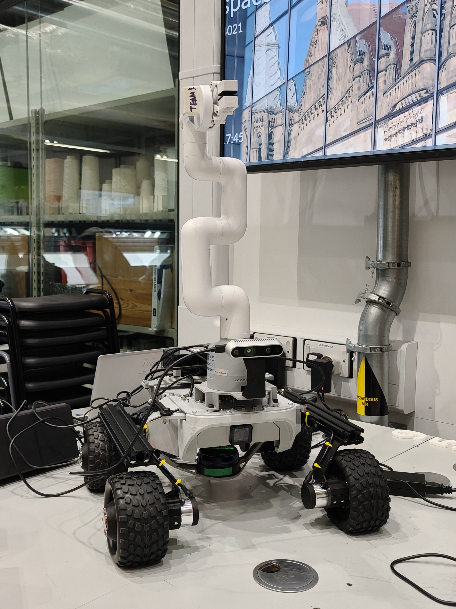
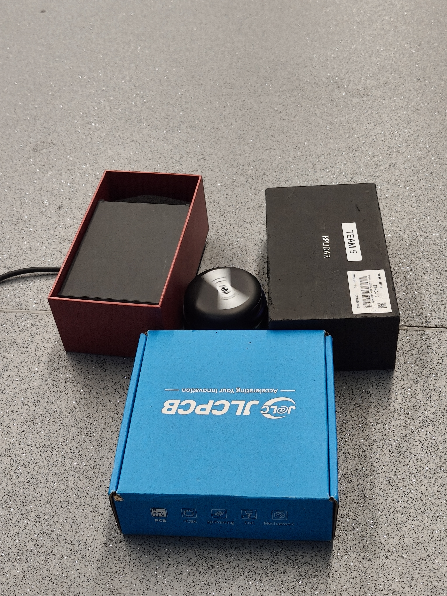
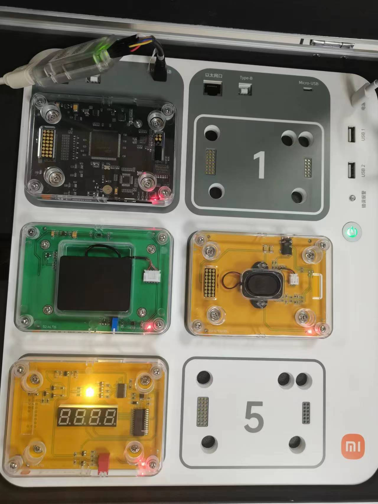
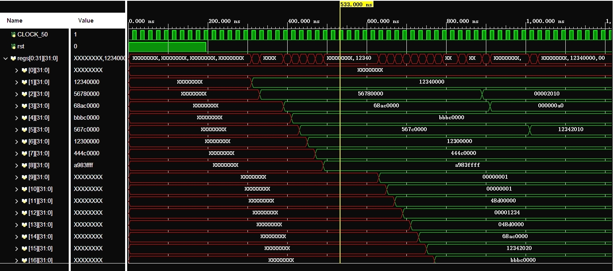

I am a Robotics Engineer with experience in product management and system design. My work focuses on building robotics and AI systems that connect embedded software with higher-level product requirements. With a Computer Science background, I am particularly interested in Embodied AI and real-world robotics applications.
Targets: Robotics Embedded Systems, System Architecture, Product Design
Interests: Embodied AI, Human-Robot Interaction (HRI)
Actively seeking new opportunities. Let's connect!

ROS2-based robotic system for autonomous search, retrieval, and sorting using computer vision.

Experimental evaluation of the RPLIDAR A2M12 to define perception boundaries for Leo Rover.
Research presentation on the role of UAVs and drones in achieving UN Sustainable Development Goals.

C-based embedded development for an IoT temperature monitoring device.

Verilog-based CPU design implementing 21 instructions and delay slot hazard resolution.